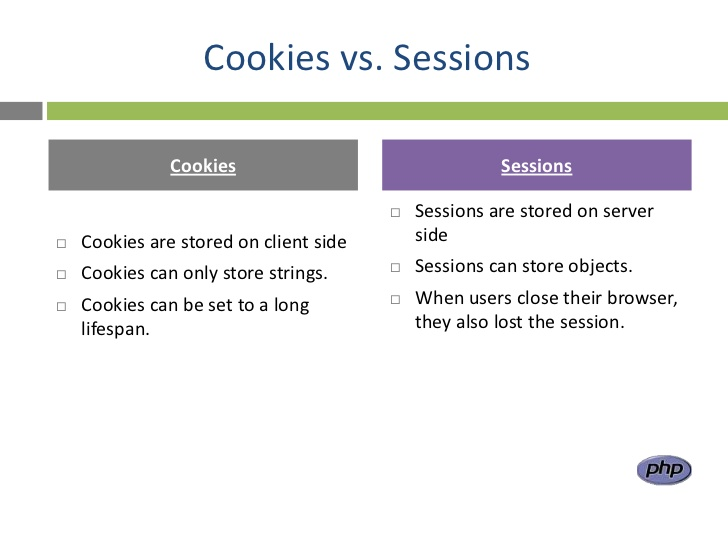

<!DOCTYPE html>
<html>
  <head>
    <title>关于前端架构</title>
    <script src='../js/slides.js'></script>
    <meta charset='utf-8'>
  </head>
  
  <style>
    /* Your individual styles here, or just use inline styles if that’s what you want. */
  </style>

  <body style='display: none'>
    <section class='slides layout-regular template-default'>
      <!--article class='biglogo'>
      </article-->
	  <article>
	    <h3>程序员的一些格言</h3>
	   <p></p>
	   <li>技术只是解决问题的选择，而不是解决问题的根本</li>
	   <li>聪明是代码清晰的敌人</li>
	   <li>写尽可能少的代码</li>
	   <li>注释是代码表述的最后选择</li>
	   <li>每天都要学一些新东西</li>
	   <li>写代码应该成为一种乐趣</li>
	  </article>
	  <!--1 不要根据个人喜好去选择使用什么语言什么技术，而是根据业务需要，问题的需求去选择适合的语言和技术，当然也要基于团队对这种东西的掌握程度 -->
	  <!--2 不要写那种很有技巧性的代码，因为代码清晰更重要。-->
	  <!--3 优秀的软件工程师写尽可能少的代码。伟大的软件工程师删除尽可能多的代码。-->
	  <!--4 所以在有能力的情况下，优先尽量把代码写好，比如名字起得更有意义之类的，代码写的别人一看就懂。比如根据业务需求无奈地写了逻辑代码，只能用注释说明 确实应该的 -->
	  <!--5 当然我们不一定能每天学习一点新东西，但是也要尽量学一点新的东西，因为前端技术变更太快。-->
	  <!--6 可能很多人进入这个行业，因为这个行业薪水可观。但其实我觉得相对于动手术的医生，每天磨破嘴皮的销售来说。写代码挺好的，因为他不血腥，还常常回报和付出很成正比。-->
	  <!-- F.Y.I. http://www.ithome.com/html/it/136451.htm  -->

      <article>
        <h1>
          关于前端架构的一些想法
        </h1>
        <p>
          Morgan Liao
          <br/>
          August 23rd, 2016
        </p>
      </article>
	  
      <article>
        <h3>Agenda</h3>
        <p>前端系统概述</p>
		<p>如何使用日志</p>
		<p>关于返回结果</p>
		<p>错误码的处理</p>
		<p>登录态失效的处理</p>
		<p>逻辑层的共享</p>
		<p>共享的Session</p>
      </article>
	  
      <article>
        <h3>前端系统概述</h3>
        <h5 class="blue">根据业务需求划分</h5>
		<p><span class="red">个人门户</span>  customer-website  https://www.hdfax.com</p>
		<p><span class="red">营销站点</span>  market-website  https://promotion.hdfax.com</p>
		<p><span class="red">手机站点</span>  mobile-website  https://mobile.hdfax.com</p>
		<p><span class="red">公用jar</span>   website-common</p>
		<p><span class="red">内容管理系统</span>  cms  https://static.hdfax.com</p>
      </article>
	  <!-- 我们有这么几个系统，现在统一的就是cweb, market-web, mobile-web都依赖一些中间件，cache,log,disconf等，同时也都依赖website-common. -->
	  <!-- 一开始从只有一个c-web然后到搭建出market-web, mobile-web之后，就会出现必须共享session的情况，
	  而在做共享session的时候觉得必须要依赖同一的jar包，不然一个系统存进redis的对象。另外一个系统取出来，没办法反序列化。 结果在做ewbsite-common jar包的时候觉得：
	  对MTP调用的逻辑其实几个系统都差不多,明显是可以被提炼的，比如登录功能，注册功能,绑卡，正好可以放在website-common中 -->
	  
	  <article>
        <h3>前端系统概述</h3>
        <h5 class="blue">现有的情况</h5>
		<p></p>
      </article>
	  
	  <article>
        <h3>前端系统概述</h3>
        <h5 class="blue">现有的情况</h5>
		<p></p>
      </article>
	  
	  <article>
        <h3>前端系统概述</h3>
        <h5 class="blue">现有的情况</h5>
		<p></p>
      </article>
	  
	  <article>
        <h3>前端系统概述</h3>
        <h5 class="blue">现有的情况</h5>
		<p></p>
      </article>
	  
	  <article>
        <h3>前端系统概述</h3>
        <h5 class="blue">现有的情况</h5>
		<p></p>
      </article>

	  
	  <article>
        <h3>前端系统概述</h3>
        <h5 class="blue">期望的改革</h5>
		<p><span class="red">页面:</span>用html+vue.js替代ftl,javascript函数来处理对数据的填充和绑定</p>
		<p><span class="red">JS层:</span>做到在js中不出现返回码的hard code</p>
		<p><span class="red">Controller:</span>只返回为业务封装好的数据</p>
		<p><span class="red">Service:</span>三个站点不做Service层，只引用同一套service</p>
		<p><span class="red">Website-common:</span>Service层逻辑/公用的interceptor/对mtp调用的封装/公用的方法</p>
      </article>
	  <!--当然我们要根据目前的形势去看，先尽量不做重复的service层代码逻辑，后面再想着如何把现有的service层逻辑都提炼走 -->

      <article>
        <h3>如何使用日志</h3>
        <pre>
import org.slf4j.Logger;
import org.slf4j.LoggerFactory;
private static final Logger log = LoggerFactory.getLogger(*******.class);
		</pre>

		 不要使用 log4j那个jar包了，用 slf4j代替了log4j  <span class="red">【仅对Web前端开发说的】</span>
      </article>
	  
	  <!--当时一弄完日志，就应该跟大家说的。。打日志的地方都改过来。以后看到的时候也需要改。-->
	  
      <article>
        <h3>关于返回结果</h3>
		
		对于Controller中要返回数据到response时，大家都喜欢这样写：
		<pre>
Map<String,Object> map = HDWebUtils.initAjaxResponseMap();
map.put(STRING_SUCCESS, true);
map.put("currentServerTime", Calendar.getInstance().getTimeInMillis());
return gson.toJson(map);
		</pre>
		改成SuccessResult(),ErrorResult, Result 这三个方法去返回。<span class="red">好处:</span>
		<p>会自动填充基本的元素：resultCode,resultMsg, success</p>
		<p>还会把对应的错误码处理 也做掉</p>
      </article>

	  
	  <article>
	  Service层代码
	  <pre>
Map<String, Object> map = HDWebUtils.initAjaxResponseMap();
HDQueryConfigResponse response = new HDQueryConfigProto().sendProtocol(request);
if (response == null) { map.put(KEY_MSG, GENERIC_ERROR);
} else if (SUCCESS_CODE.equals(response.getResultCode())) {
    map.put(MTP_RES, response);
    map.put(STRING_SUCCESS, true);
} else {
    map.put(KEY_CODE, response.getResultCode());
    map.put(KEY_MSG, response.getResultMsg());
}     return map;
		</pre>
		改成:直接把BaseResponse的子类返回到Controller,<span class="red">好处:</span>
		<p>Controller应该是跟Service层相独立的，用上述方式，使用者必须看到函数源代码才能使用，耦合性太强</p>
		<p>直接用某个Response的值，那么对于调用者他只需要知道这个返回的对象结构就行</p>
	  </article>

	  
      <article>
        <h3>错误码的处理</h3>
        Controller中使用 result() 和 errorResult() 和 successResult() 
		<p>注：有时候要求成功的时候提示的文案 不一样，所以通过successResult就能做到</p>

		util.js：
		<pre>
var showTips = function (displayType, displayMsg) {
  if (!!displayType) {
   var functionName = eval(displayType);
  functionName(displayMsg);
 }
};
	   </pre>
		Util.showTips(res.displayType, res.resultMsg);
      </article>

      <article>
        <h3>登录态失效的处理</h3>
		<li>Controller层对登录态失效错误码进行处理。
		<li>JS层复写jquery的ajax方法，特殊处理这种情况</li>
		<pre>
//前台js直接判断这个字段 是否为空，如果不为空就会跳转到，如果为空，就按照原先的逻辑走。
if ((RESULTCODE_SESSION_EXPIRED.equals(realErrorCode)
    || RESULTCODE_KICKEDOUT.equals(realErrorCode)) && request != null) {
    setNeedLoginURL(request, result);
}
       </pre>
	   <pre>
if(!data.success && !!data.needLoginURL) {
  $("#toastContent").html(data.resultMsg);
  $("#toast").show();
  setTimeout(function () {
    $("#toast").hide();
    window.location = data.needLoginURL;
  }, 2000);
} else {
  fn.success(data, textStatus);
}
	   </pre>
      </article>

	<article>
        <h3>逻辑层的共享</h3>
		<li>把封装httpClient对MTP的调用的逻辑抽到website-common包中</li>
        <li>把Service层代码全部提取到website-common包中</li>
      </article>
	  <!-- 提取代码 没什么技术含量，唯一要注意的就是：不可能一致性做完整，
	  有时候，这一次做一点，下一次做一点，需要保证 当两个类同时存在的时候，不要名字冲突，不要搞混。 -->
	  
	  <article>
        <h3>共享的Session</h3>
		<li>基于Cookie实现</li>
		<li>两层Cookie的Session</li>
      </article>
	  
	  <article>
        <h3>关于cookie和session</h3>
		<p></p>
      </article>
	  
	  <article>
        <h3>cookie和session区别</h3>
		<p></p>
      </article>
	  
	  <article>
        <h3>cookie特点</h3>
		<p>cookie能存储的信息非常小</p>
		<p>如果设置expire time就会被存在硬盘上，如果不设置expire time就存在浏览器占用的内存里</p>
		<p>cookie是根据域名来的，不能设置一个cookie说对于所有域名生效或者几个域名生效</p>
		<p>允许设置cookie到一级域名，然后可以共享给所有的二级域名</p>
      </article>
	  
	  
	  <article>
	    <h3>后续还需要解决的问题</h3>
		<li>对浏览器的history的管理</li>
		<li>vue.js引用的js如何均匀的指向不同的CDN</li>
		<p></p>
	  </article>

      <article>
        <h3>
          Q&A 
        </h3>
        
		<h5 class="yellow">Thank you!</h5>
		
        <ul>
		  <li><a href='http://www.ithome.com/html/it/136451.htm'>程序员的一些格言</a></li>
          <li><a href='https://en.wikipedia.org/wiki/HTTP_cookie'>Http Cookie</a></li>
          <li><a href='http://oa.hengjs.com/w/eif/dev_team/app/architecture/'>适度优化后期望的代码和架构</a></li>
		  <li><a href='http://www.html5rocks.com/zh/tutorials/internals/howbrowserswork/'>浏览器工作原理</a></li>
        </ul>
      </article>

    </section>

  </body>
</html>
